BUSHIDO
PROXIMAMENTE


Bushido esta ambientado en la batalla de Nagashino de 1575 en Mikawa, Japon. Cuando Takeda Katsuroyi decidio seguir los pasos de su padre Takeda Shingen, que eran invadir las tierras del clan Tokugawa. Poco sabia Katsuroyi sobre las altas defensas de estas tierras, pues cada ataque que realizaba a los cuarteles de Tokugawa parecian cada vez menos eficientes, pues cuando todo parecia perdido se encontró con un extraño hombre que, tras varios dias de charla, lo convencio de que la mejor idea de atacar era empezando por el castillo Nagashino, aquel hombre le hablo de que era un viejo amigo de su padre y acto seguido le dio un amuleto que, segun el hombre misterioso, le daria la suerte que tanta falta le hacia a Katsuroyi, fue entonces que Katsuroyi convencido de que no podia echarse para atras en su ataque y al mismo tiempo no manchar el legado de su clan, que decidio hacer un ultimo ataque al castillo de Nagashino, justo como el hombre le comentó. Tras varios dias de combate, el clan Takeda perdio la batalla, en su ultimo aliento, con enojo y dolor, maldijo al clan Tokugawa, sosteniendo con fuerza el amuleto, cuando de pronto el dia empezo a caer y la noche se alzo, el clan Tokugawa no sabia que estaba pasando, confundidos presenciaron como los miembros del clan Takeda empezaron a incorporarse, sus rostros y musculos empezaron a cambiar de forma, ya no parecian humanos, esas criaturas eran algo mas... eran demonios. Es en ese preciso momento que nuestro protafonista comienza su historia.

Con el sistema de iteroperabilidad podras usar items que tu hayas adquirido en otros juegos.
¡Puedes poner en venta items que hayas desbloqueado desde la aplicacion o dentro del juego!


Con el sistema de iteroperabilidad podras usar items que tu hayas adquirido en otros juegos.